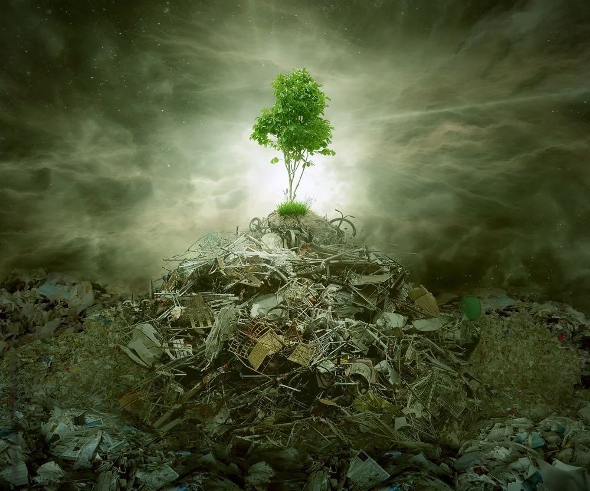

These actions can impact negatively on the development of the country. Therefore, CWM has taken the initiative to implement e-waste management that has been regularized by the CEA. We follow the “Triple Bottom Line” or 3BL concept that focuses on securing the planet and its people, for sustainability.
Sri Lanka is a country that has a lot of industrial hazardous waste (IHW) with minimal opportunities and methods to dispose it. We have identified many industries in Sri Lanka that follow unauthorized and risky procedures to dispose such waste.
CWM has successfully designed and implemented adequate disposal procedures for IHW. We have managed to dispose hazardous waste including mercury contaminated IHW, arsenic trioxide, and many more.
CWM are the leaders of hazardous waste management in Sri Lanka. The company has identified the need for hazardous waste management procedures in Sri Lanka and has implemented he required procedures.
